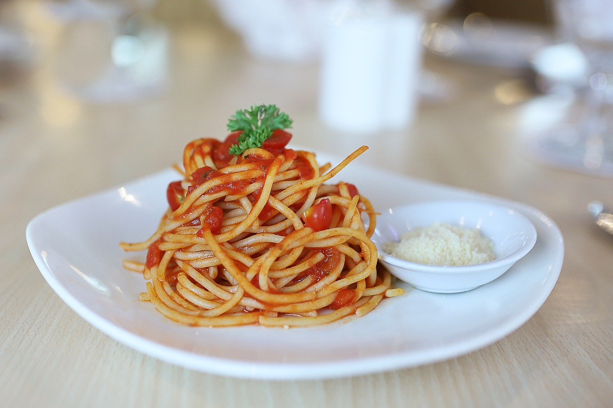

Spaghetti mit Tomaten-Parmesansoße

 15 Min.
15 Min.
medium
 22.11.2024
22.11.2024
Zubereitung
 ca. 15 Minuten
ca. 15 Minuten
 Gesamtzeit ca. 20 Minuten
Gesamtzeit ca. 20 Minuten
1. Spaghetti kochen:
- Setze einen großen Topf mit Wasser auf und bringe es zum Kochen. Sobald das Wasser kocht, salze es großzügig und gib die Spaghetti hinein.
- Koche die Spaghetti gemäß der Packungsanweisung al dente (meistens ca. 8-10 Minuten).
- Gieße die Spaghetti ab und stelle sie beiseite, dabei etwas Kochwasser aufbewahren.
2. Tomaten-Parmesansoße zubereiten:
- Während die Spaghetti kochen, erhitze das Olivenöl in einer großen Pfanne bei mittlerer Hitze.
- Schneide die Zwiebel in kleine Würfel und brate sie im Olivenöl für ca. 3-4 Minuten an, bis sie weich und leicht goldbraun sind.
- Hacke den Knoblauch fein und gib ihn zu den Zwiebeln. Brate ihn für etwa 1-2 Minuten mit, bis er duftet.
- Gib die Tomaten aus der Dose hinzu (wenn du ganze Tomaten verwendest, zerdrücke sie einfach mit einem Löffel oder einer Gabel in der Pfanne).
- Lasse die Tomatenmischung bei mittlerer Hitze für 10-15 Minuten köcheln, bis die Sauce etwas eingedickt ist. Wenn du möchtest, kannst du eine Prise Zucker hinzufügen, um die Säure der Tomaten zu balancieren.
- Würze die Sauce mit Salz, Pfeffer und getrocknetem Oregano oder frischem Basilikum.
3. Parmesan hinzufügen:
- Sobald die Sauce fertig ist, nehme sie vom Herd und rühre den frisch geriebenen Parmesan unter. Der Parmesan wird die Sauce schön cremig machen.
4. Spaghetti und Sauce vereinen:
- Gib die abgetropften Spaghetti in die Pfanne mit der Tomaten-Parmesansoße und vermische alles gut, sodass die Nudeln gleichmäßig mit der Sauce bedeckt sind. Falls die Sauce zu dick ist, kannst du etwas von dem aufgehobenen Nudelwasser hinzufügen, um sie zu verdünnen.
5. Servieren:
- Richte die Spaghetti auf Tellern an und streue bei Bedarf noch mehr Parmesan darüber. Du kannst auch noch etwas frisches Basilikum darüber geben, wenn du magst.
Rezept erstellt von
Kenan Cetin